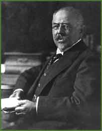

|  | |||
| Bernát Alexander was a philosopher, a lecturer at the University in Budapest from 1878, a member of the Hungarian Academy of Sciences from 1892 and a lecturer at the Academy of Dramatic Art. He translated and published the classical authors of philosophy into Hungarian. After the collapse of the Hungarian Soviet Republic in 1919 he left Hungary, but he returned for the final years of his life. | |||